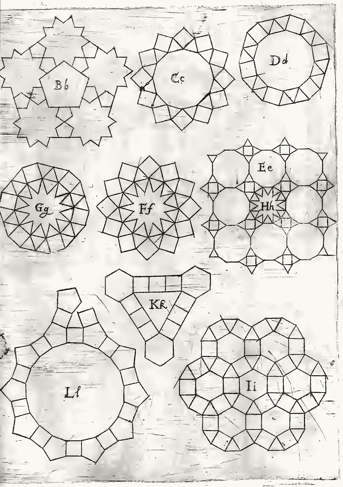

Proposition XX: Four Cases of Filling a Plane with Three Species (Plates Cc–Nn)¶
Proposition XX.
From plane angles of three species, a plane place is congruently filled in four ways.
Here three or more triangles are not tolerated: for three triangular angles make two right angles; there remains less than the sum of the smallest angles after them, namely the square and the pentagon. For the same reason, neither can two squares or greater figures be associated with two triangles, because not enough space would remain for the angle of a figure of a third species.
Therefore, if there are two triangles and one square, a dodecagon will be associated with them; yet the form is not continued: see at letters Cc, Dd, Ee three forms, all belonging to the first case.
Hither also let the twelve-pointed star be referred, as above. For four triangles, one square, and one ray of a star will fill the place. Behold the forms Ff, Gg, Hh.
If one pentagon is joined to two triangles, the remainder will be incongruent, \(\frac{32}{15}\) of a right angle; for no angle has \(\frac{16}{15}\). But if one hexagon is added to two triangles, the remainder will also be a hexagon, and the form will be one of those above. Henceforth, therefore, there cannot be two triangles.
Therefore, if there is one triangle, three squares will not be added to it, for too much is amassed, nor is enough space left for an angle of a third species.
Let two squares be added to one triangle; into the remainder up to four right angles
f. 0072 · p. 56a hexagon will be congruent; a twofold form, continuable at letters Ii, not continuable without admixture at Kk. And this is the second case.
One triangle is not joined with two pentagons, for there remains a gap of \(\frac{14}{15}\) of one right angle, foreign to regular figures; nor with one pentagon, for again \(\frac{32}{15}\) remain, whereas no regular figure has \(\frac{16}{15}\); nor with one hexagon, for they make two right angles, whereas no single angle becomes so large, and half of this is the size of a square, which has already been treated; nor with a heptagon, or an octagon, or an enneagon taken singly, for there would remain for the angle of the third species of figures either \(\frac{40}{21}\), or \(\frac{11}{6}\), or \(\frac{16}{9}\), such as no regular figure has.
Therefore, one triangle combined with one decagon leaves a gap of \(\frac{26}{15}\), which is the angle of a fifteen-gon. Here indeed there is congruence, but only begun. For the fifteen-gon is odd-sided; wherefore by Proposition XVII diverse species of junctions are mixed at the angles of the same figure. The decagon, having an even number of sides, could indeed be girded alternately by a triangle and a fifteen-gon, but immediately two such fifteen-gons run into one another and obstruct each other.
Further, a triangle cannot be joined with an eleven-gon, for \(\frac{56}{33}\) remain, an angle which no regular figure has.
Finally, a triangle with a dodecagon leaves a dodecagonal gap, of which form mention has already been made.
If a triangle were joined with larger figures, the gap would become smaller, whereas we have already dealt with the smaller ones. And thus we have done with admitting a triangle among three species.
More than one square angle, subtracted from four right angles, do not leave enough space for two angles of two species, inasmuch as joined together they would become greater than two right angles.
One square joined to one pentagon leaves a gap for an icosagon (twenty-gon). Therefore the icosagon is associated at all its angles and is legitimately congruent: yet this order is not continued outward. It is therefore an imperfect congruence. Behold the figure at letter Ll. This is the third case.
A square joined to a hexagon leaves a gap for a dodecagon. Behold the figure at letter Mm: this is the fourth and last case.
Refer hither the twelve-pointed star, which twelve triangles fill: so that four angles here concur to fill out the plane, namely two triangles, a square, a hexagon, and a ray of a star. Behold the figure at letter Nn.
A square added to a heptagon leaves a gap of \(\frac{11}{7}\), an angle which no regular figure has. Added to an octagon, it leaves an octagonal gap: of which form above. Thus we have done with the square.
A pentagon with a hexagon leaves a gap of \(\frac{22}{15}\); with a heptagon, \(\frac{48}{35}\); with an octagon, \(\frac{13}{10}\), since no regular figure has so large an angle: and already the gap begins to be smaller than an octagonal angle, which is \(\frac{15}{10}\). Yet we have already dispatched those which belong to smaller angles. Thus we have done with the pentagon.
A triple hexagon fills a plane place, and therefore cannot be mingled with two figures greater than itself. And thus we have done with the mingling of three figures.
f. 0079 · Tabula Cc–Pp
